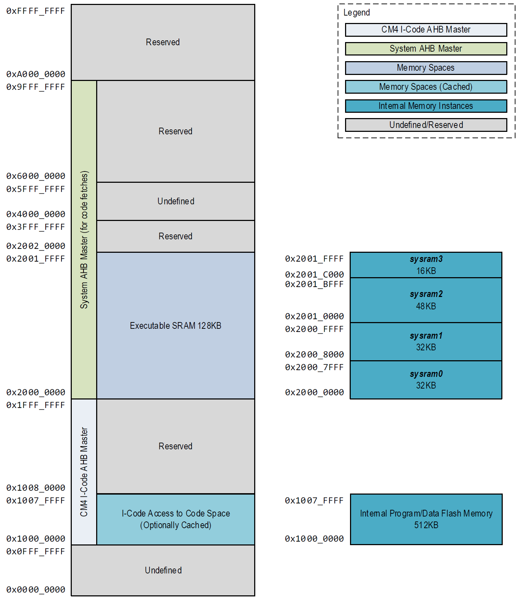
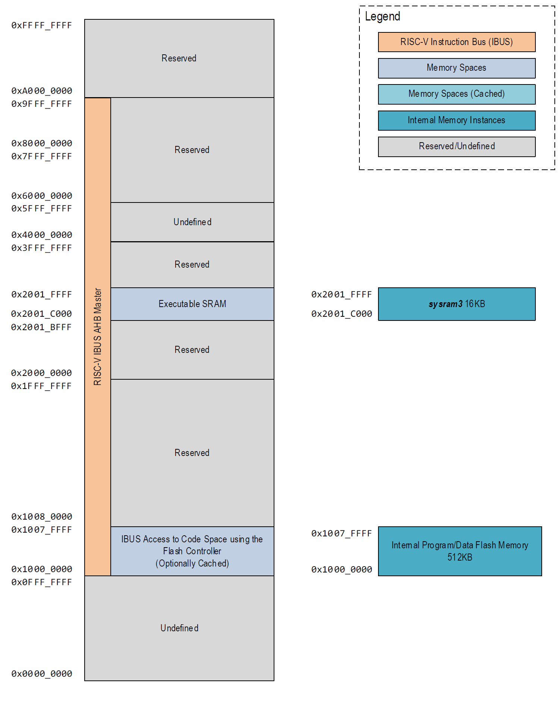

Memory, Register, Mapping, and Access
Overview
The Arm Cortex-M4 architecture defines a standard memory space for unified code and data access. This memory space is addressed in units of single bytes but is most typically accessed in 32-bit (4 byte) units. It may also be accessed, depending on the implementation, in 8-bit (1 byte) or 16-bit (2 byte) widths. The total range of the memory space is 32 bits wide (4GB addressable total), from addresses 0x0000 0000 to 0xFFFF FFFF.
However, it is important to note that the architectural definition does not require the entire 4GB memory range to be populated with addressable memory instances.
Figure 3-1: CM4 Code Memory Mapping

Figure 3-2: RISC-V IBUS Code Memory Mapping

Standard Memory Regions
Several standard memory regions are defined for the Arm Cortex-M4 (CPU0) and RISC-V (CPU1) architectures; many of these are optional for the system integrator. At a minimum, the MAX78000 must contain some code and data memory for application software, stack, and variable space for CPU0.
Code Space
The code space area of memory is designed to contain the primary memory used for code execution by the device. This memory area is defined from byte address range 0x0000 0000 to 0x1FFF FFFF (0.5GB maximum). The Cortex-M4 core and Arm debugger use two different standard core bus masters to access this memory area. The I-Code AHB bus master is used for instruction decode fetching from code memory, while the D-Code AHB bus master is used for data fetches from code memory. This is arranged so that data fetches avoid interfering with instruction execution. Additionally, the RV32 uses the D-BUS to access code memory in this area and the I-Bus to access data fetches from the code memory.
The MAX78000 code memory mapping is illustrated in Figure 3-1 and Figure 3-2. The code space memory area contains the main internal flash memory, which holds most of the software executed on the device. The internal flash memory is mapped into both code and data space from 0x1000 0000 to 0x1007 FFFF. The main program flash memory is 512KB and consists of 64 logical pages of 8,192 Bytes per page.
This program memory area must also contain the default system vector table and the initial settings for all system exception handlers and interrupt handlers for the CM4 core. The reset vector for the device is 0x0000 0000 and contains the device ROM code that transfers execution to user code at address 0x1000 0000.
The code space memory on the MAX78000 also contains the mapping for the flash information block, from 0x1080 0000 to 0x1080 3FFF. However, this mapping is only present during production test; it is disabled once the information block has been loaded with valid data and the info block lockout option has been set. This memory is accessible for data reads only and cannot be used for code execution. See Information Block Flash Memory for additional details.
Internal Cache Memory
The MAX78000 includes a dedicated unified internal cache controller with 16,384 bytes of internal cache memory (ICC0) for the CM4 core. Optionally, sysram3 can be used as a unified internal cache controller (ICC1) for the RV32.
The unified internal cache memory is used to cache data and instructions fetched through the I-Code bus for the CM4 or the IBUS for the RV32 from the internal flash memory. See section Unified Internal Cache Controller for detailed instructions on enabling the unified internal cache controllers.
Information Block Flash Memory
The information block is a separate area of the internal flash memory and is 16,384 Bytes. The information block is used to store trim settings (option configuration and analog trim) and other nonvolatile device-specific information. The information block also contains the device's unique serial number (USN). The USN is a 104-bit field. USN bits 0 thru 7 contain the die revision.
Figure 3-5: Unique Serial Number Format
| Bit Position | |||||||||||||||||||||||||||||||||
| 31 | 30 | 29 | 28 | 27 | 26 | 25 | 24 | 23 | 22 | 21 | 20 | 19 | 18 | 17 | 16 | 15 | 14 | 13 | 12 | 11 | 10 | 9 | 8 | 7 | 6 | 5 | 4 | 3 | 2 | 1 | 0 | ||
| 0x10800000 | USN bits 16-0 | x | x | x | x | x | x | x | x | x | x | x | x | x | x | x | |||||||||||||||||
| 0x10800004 | x | USN bits 47-17 | |||||||||||||||||||||||||||||||
| 0x10800000 | USN bits 64-48 | x | x | x | x | x | x | x | x | x | x | x | x | x | x | x | |||||||||||||||||
| 0x1080000C | x | USN bits 95-65 | |||||||||||||||||||||||||||||||
| 0x10800010 | x | x | x | x | x | x | x | x | x | USN bits 103-96 | x | x | x | x | x | x | x | x | x | x | x | x | x | x | x | ||||||||
Reading the USN requires unlocking the information block. Unlocking the information block does not enable write access to the block but allows the contents of the USN to be read from the block. Unlock the information block using the following steps:
- Write 0x3A7F 5CA3 to FLC_ACTRL.
- Write 0xA1E3 4F20 to FLC_ACTRL.
- Write 0x9608 B2C1 to FLC_ACTRL.
- The information block is now read-only accessible.
To re-lock the information block to prevent access, write any 32-bit word to FLC_ACTRL.
SRAM Space
The SRAM area of memory is intended to contain the primary SRAM data memory of the device and is defined from byte address range 0x2000 0000 to 0x3FFF FFFF (0.5GB maximum). This memory can be used for general-purpose variable and data storage, code execution, the CM4 stack, and the RV32 stack. The MAX78000 CM4's data memory mapping is illustrated in Figure 3-1. The MAX78000 RV32's data memory mapping is illustrated in Figure 3-4.
The system SRAM configuration is defined in Table 3-1. Additionally, the CNN memory is covered in the CNN chapter in the section Memory Configuration.
The SRAM area contains the main system RAM. The size of the internal general-purpose data SRAM is 128KB. The SRAM is divided into four blocks and consists of the contiguous address range from 0x2000 0000 to 0x2001 FFFF. The SRAM area on the MAX78000 can be used for data storage and code execution by the CM4. The RV32 is limited to sysram2 and sysram3 for code and data storage.
Note: After a POR, the CM4 has access to all four SRAM regions. sysram2 and sysram3 can be configured to restrict access from the CM4 to prevent unintended modifications of these SRAM instances by the CM4. Set the FCR_URVCTRL.memsel field to 1 to set the RV32 core as the exclusive master for sysram2 and sysram3.
Code stored in the SRAM is accessed directly for execution (using the system bus) and is not cached. The SRAM is also where the CM4 and RV32 stack must be located, as it is the only general-purpose SRAM on the device capable of this function.
Table 3-1: System SRAM Configuration
| System RAM Block # | Size | Start Address | End Address | CM4 Accessible | RV32 Accessible |
|---|---|---|---|---|---|
| sysram0 | 32KB | 0x2000 0000 | 0x2000 7FFF | ✓ | No |
| sysram1 | 32KB | 0x2000 8000 | 0x2000 FFFF | ✓ | No |
| sysram2 | 48KB | 0x2001 0000 | 0x2001 BFFF | Configurable | ✓ |
| sysram3 | 16KB | 0x2001 C000 | 0x2001 FFFF | Configurable | ✓ (Optional ICC1) |
The MAX78000 specific AHB Bus Masters can access the SRAM to use as general storage or working space.
The entirety of the SRAM space on the MAX78000 is contained within the dedicated Arm Cortex-M4 SRAM bit-banding region from 0x2000 0000 to 0x200F FFFF (1MB maximum for bit-banding). This means that the CPU can access the entire SRAM either using standard byte/word/doubleword access or using bit-banding operations. The bit-banding mechanism allows any single bit of any given SRAM byte address location to be set, cleared, or read individually by reading from or writing to a corresponding doubleword (32-bit wide) location in the bit-banding alias area.
The alias area for the SRAM bit-banding is located beginning at 0x2200 0000 and is a total of 32MB maximum, which allows the entire 128KB bit banding area to be accessed. Each 32-bit (4 byte aligned) address location in the bit-banding alias area translates into a single bit access (read or write) in the bit-banding primary area. Reading from the location performs a single bit read while writing either a 1 or 0 to the location performs a single bit set or clear.
Note: The Arm Cortex-M4 core translates the access in the bit-banding alias area into the appropriate read cycle (for a single bit read) or a read-modify-write cycle (for a single bit set or clear) of the bit-banding primary area. Bit-banding is a core function (i.e., not a function of the SRAM interface layer or the AHB bus layer) and thus is only applicable to accesses generated by the core. Reads and writes to the bit-banding alias area by other (non-Arm-core) bus masters does not trigger a bit-banding operation and instead results in an AHB bus error.
Peripheral Space
The peripheral space area of memory is intended to map control registers, internal buffers, and other features needed for the software control of non-core peripherals. It is defined from byte address range 0x4000 0000 to 0x5FFF FFFF (0.5GB maximum). On the MAX78000, all device-specific module registers are mapped to this memory area and any local memory buffers or FIFOs that are required by modules.
As with the SRAM region, there is a dedicated 1MB area at the bottom of this memory region (from 0x4000 0000 to 0x400F FFFF) used for bit-banding operations by the Arm core. Four-byte-aligned read/write operations in the peripheral bit-banding alias area (32MB in length, from 0x4200 0000 to 0x43FF FFFF) are translated by the core into read/mask/shift or read/modify/write operation sequences to the appropriate byte location in the bit-banding area.
Note: The bit-banding operation within peripheral memory space is, like bit-banding function in SRAM space, a core remapping function. As such, it is only applicable to operations performed directly by the Arm core. If another memory bus master accesses the peripheral bit-banding alias region, the bit-banding remapping operation does not occur. In this case, the bit-banding alias region appears to be a non-implemented memory area (causing an AHB bus error).
On the MAX78000, access to the region containing most peripheral registers (0x4000 0000 to 0x400F FFFF) goes from the AHB bus through an AHB-to-APB bridge enabling the peripheral modules to operate on the lower power APB bus matrix. This also ensures that peripherals with slower response times do not tie up bandwidth on the AHB bus, which must necessarily have a faster response time since it handles main application instruction and data fetching.
AES Key and Working Space Memory
The AES key memory and working space for AES operations (including input and output parameters) are in a dedicated register file memory tied to the AES engine block. This AES memory is mapped into AHB space for rapid software access.
System Area (Private Peripheral Bus)
The system area (private peripheral bus) memory space contains register areas for functions that are only accessible by the Arm core itself (and the Arm debugger, in certain instances). It is defined from byte address range 0xE000 0000 to 0xE00F FFFF. This APB bus is restricted and can only be accessed by the Arm core and core-internal functions. It cannot be accessed by other modules which implement AHB memory masters, such as the DMA interface.
In addition to being restricted to the core, application software can only access this area when running in privileged execution mode (instead of the standard user thread execution mode). This helps ensure that critical system settings controlled in this area are not altered inadvertently or by errant code that should not access this area.
Core functions controlled by registers mapped to this area include the SysTick timer, debug and tracing functions, the nested vector interrupt controller (NVIC), and the flash breakpoint controller.
AHB Interfaces
The following sections detail memory accessibility on the AHB and the organization of AHB master and slave instances.
Arm Core AHB Interfaces
I-Code
The Arm core uses the I-Code AHB master for instruction fetching from memory instances located in code space from byte addresses 0x0000 0000 to 0x1FFF FFFF. This bus master is used to fetch instructions from the internal flash memory.
Instructions fetched by this bus master are returned by the cache, which in turn triggers a cache line fill cycle to fetch instructions from the internal flash memory when a cache miss occurs.
D-Code
The Arm core uses the D-Code AHB master for data fetches from memory instances in code space from byte addresses 0x0000 0000 to 0x1FFF FFFF. This bus master has access to the internal flash memory and the information block.
System
The Arm core uses the system AHB master for all instruction fetches, and data read and write operations involving the SRAM data cache. The APB mapped peripherals (through the AHB-to-APB bridge) and AHB mapped peripheral and memory areas are also accessed using this bus master.
AHB Slaves
Standard DMA
The standard DMA AHB slave has access to all non-core memory areas accessible by the system bus. The standard DMA does not have access to the internal flash memory or Information blocks.
CNN and CNN TX FIFO
The CNN and CNN TX FIFO AHB slaves have access to all non-core memory areas accessible by the system bus. They do not have access to the internal flash memory or information blocks.
SPIO
The SPI0 AHB slave has access to all non-core memory areas accessible by the system bus. SPI0 does not have access to the internal flash memory or information blocks.
AHB Slave Base Address Map
Table 3-2 contains the base address for each of the AHB slave peripherals. The base address for a given peripheral is the start of the register map for the peripheral. For a given peripheral, the address for a register within the peripheral is defined as the peripheral's AHB base address plus the register's offset.
Table 3-2: AHB Slave Base Address Map
| AHB Slave Register Name | Register Prefix | AHB Base Address | AHB End Address |
|---|---|---|---|
| SPI0 | SPI0_ | 0x400B E000 | 0x400B E3FF |
| CNN TX FIFO | CNN_FIFO_ | 0x400C 0400 | 0x400C 0400 |
Peripheral Register Map
APB Peripheral Base Address Map
Table 3-3 contains the base address for each of the APB mapped peripherals. The base address for a given peripheral is the start of the register map for the peripheral. For a given peripheral, the address for a register within the peripheral is defined as the APB peripheral base address plus the registers offset.
Table 3-3: APB Peripheral Base Address Map
| Peripheral Register Name | Register Prefix | APB Base Address | APB End Address |
|---|---|---|---|
| Global Control | GCR_ | 0x4000 0000 | 0x4000 03FF |
| System Interface | SIR_ | 0x4000 0400 | |
| Watchdog Timer 0 | WDT0_ | 0x4000 3000 | 0x4000 33FF |
| Dynamic Voltage Scaling Controller | DVS_ | 0x4000 3C00 | 0x4000 3C3F |
| Single Input Multiple Output | SIMO_ | 0x4000 4400 | 0x4000 47FF |
| Trim System Initialization | TRIMSIR_ | 0x4000 5400 | 0x4000 57FF |
| General Control Function | GCFR_ | 0x4000 5800 | 0x4000 5BFF |
| Real time Clock | RTC_ | 0x4000 6000 | 0x4000 63FF |
| Wakeup Timer | WUT_ | 0x4000 6400 | 0x4000 67FF |
| Power Sequencer | PWRSEQ_ | 0x4000 6800 | 0x4000 6BFF |
| Miscellaneous Control | MCR_ | 0x4000 6C00 | 0x4000 6FFF |
| AES | AES_ | 0x4000 7400 | 0x4000 77FF |
| AES Key | AESKEY_ | 0x4000 7800 | 0x4000 7BFF |
| GPIO Port 0 | GPIO0_ | 0x4000 8000 | 0x4000 8FFF |
| GPIO Port 1 | GPIO1_ | 0x4000 9000 | 0x4000 9FFF |
| Parallel Camera Interface | PCIF_ | 0x4000 E000 | 0x4000 EFFF |
| CRC | CRC_ | 0x4000 F000 | 0x4000 FFFF |
| Timer 0 | TMR0_ | 0x4001 0000 | 0x4001 0FFF |
| Timer 1 | TMR1_ | 0x4001 1000 | 0x4001 1FFF |
| Timer 2 | TMR2_ | 0x4001 2000 | 0x4001 2FFF |
| Timer 3 | TMR3_ | 0x4001 3000 | 0x4001 3FFF |
| I2C 0 | I2C0_ | 0x4001 D000 | 0x4001 DFFF |
| I2C 1 | I2C1_ | 0x4001 E000 | 0x4001 EFFF |
| I2C 2 | I2C2_ | 0x4001 F000 | 0x4001 FFFF |
| Standard DMA | DMA_ | 0x4002 8000 | 0x4002 8FFF |
| Flash Controller 0 | FLC0_ | 0x4002 9000 | 0x4002 93FF |
| Instruction-Cache Controller 0 (CM4) | ICC0_ | 0x4002 A000 | 0x4002 A7FF |
| Instruction Cache Controller 1 (RV32) | ICC1_ | 0x4002 A800 | 0x4002 AFFF |
| ADC | ADC_ | 0x4003 4000 | 0x4003 4FFF |
| Pulse Train Engine | PT_ | 0x4003 C000 | 0x4003 C09F |
| 1-Wire Master | OWM0_ | 0x4003 D000 | 0x4003 DFFF |
| Semaphore | SEMA_ | 0x4003 E000 | 0x4003 EFFF |
| UART 0 | UART0_ | 0x4004 2000 | 0x4004 2FFF |
| UART 1 | UART1_ | 0x4004 3000 | 0x4004 3FFF |
| UART 2 | UART2_ | 0x4004 4000 | 0x4004 4FFF |
| SPI1 | SPI1_ | 0x4004 6000 | 0x4004 7FFF |
| TRNG | TRNG_ | 0x4004 D000 | 0x4004 DFFF |
| I2S | I2S_ | 0x4006 0000 | 0x4006 0FFF |
| Low Power General Control | LPGCR_ | 0x4008 0000 | 0x4008 03FF |
| GPIO Port 2 | GPIO2_ | 0x4008 0400 | 0x4008 05FF |
| Low Power Watchdog Timer 0 (WDT1) | WDT1_ | 0x4008 0800 | 0x4008 0BFF |
| Low Power Timer 4 | TMR4_ | 0x4008 0C00 | 0x4008 0FFF |
| Function Control | FCR_ | 0x4000 0800 | 0x4000 0BFF |
Error Correction Coding (ECC) Module
This device features an Error Correction Coding (ECC) module that helps ensure data integrity by detecting and correcting bit corruption of the system RAM0 (sysram0) memory array. More specifically, the ECC module is a single error-correcting, double error detecting (SEC-DED). It corrects any single bit flip, detects two bit errors, and features a transparent zero wait state operation for reads.
The ECC works by creating check bits for all data written to sysram0. These check bits are then stored along with the data. During a read, both the data and check bits are used to determine if one or more bits have become corrupt. If a single bit has been corrupted, this can be corrected. If two bits have been corrupted, it is detected but not corrected.
If only one bit is determined to be corrupt, reads contain the "corrected" value. Reading memory does not correct the error value stored at the read memory location. It is up to the software to determine the appropriate time and method to write the correct data to memory. It is strongly recommended that the software correct the memory as soon as possible to minimize the chance of a second bit from becoming corrupt, resulting in data loss. Since ECC error checking occurs only during a read operation, it is recommended that the application periodically reads critical memory so that errors can be identified and corrected.
SRAM
A check bit RAM is used to store sysram0's check bits, enabling ECC SEC-DED for sysram0. The check bit RAM is not mapped to the user memory space and is unavailable for application usage.
Limitations
Any read from non-initialized memory can trigger an ECC error since the random check bits most likely do not match the random data bits contained in the memory. Writing sysram0 to all zeroes before enabling ECC functionality can prevent this at the expense of the time required. To zeroize sysram0, write GCR_MEMZ.ram0 to 1.